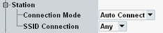

Station Settings
In the operation mode "Station", the following node is available in the connection settings.

Station node
This setting determines the connection behavior of the simulated station.
"Auto Connect" | Associations are initiated automatically. |
"Manual" | Associations are initiated manually via hotkey, see "Signaling and Connection Control". |
This setting specifies to which access points the simulated station is allowed to connect.
"Any" | The station is allowed to connect to any available AP. |
"SSID" | The station is only allowed to connect to the AP configured via "SSID". |